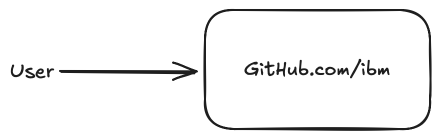
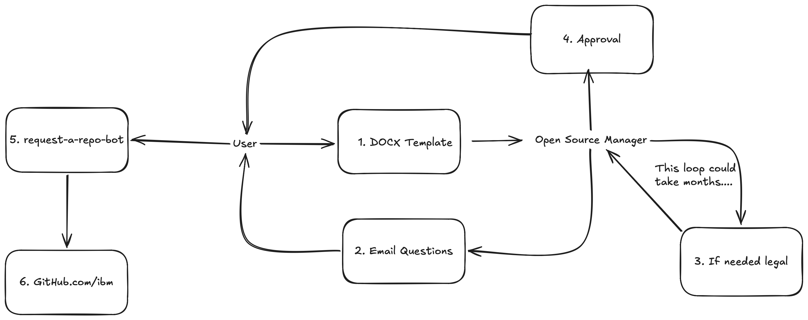
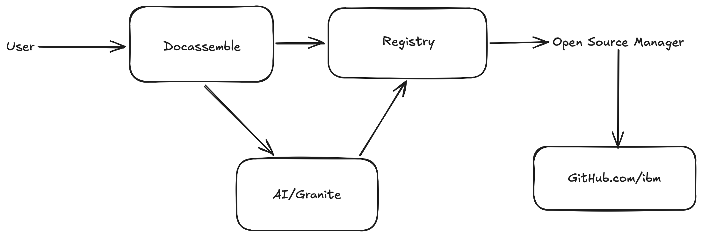

Streamlining Enterprise‑Scale Open‑Source Governance with docassemble & Granite
by JJ Asghar || awesome@ibm.com
Situation
IBM is a BIG company.
IBM needs to know what we are actually open sourcing.
IBM needs to know where we are engaging and what communities we are upstreaming to.
We have 8,000+ "known" IBM ran/responsible open source repos.
Including 90+ public GitHub organizations.
We have built in an opt-in upstream tracking system to get some visibility.
But it was quickly leveraged by "metrics" driven development manangers, so we had to roll back some statistics that were being weaponized.
We had (and honestly still have) a fundemental miss understanding of what an "open source contribution" is, and the scopes of the different levels of upstreaming code.
People knew of the overarching open source process, but because of the convolution or length of time it took, they ignored it.
Or found excuses not to do it.
Problem


Paper work and overhead pushed 8+ hours of additional work for every patch we wanted to upstream.
Pssst....JJ show the old example of the questionare here
We had no actively maintained centralized tracking of what was being open sourced.
We had people just releasing code with "emails" from their first line managers, where we didn't know if we were letting go code that could be what we considered to be "crown jewels."
How we fixed it...

Yep, it's done with yaml.
So what did we learn?
If I can talk more, I'll tell you but tl;dr...
- Putting logic in a questioniare truly helped our developers.
- If people complained about the process that means they are actually using the process.
- Education of an ever changing open source landscape, also requires a level of credibility internally to be a trusted messenger.
...and frankly no one likes paperwork, and they just want to open source things, but for a business to work you have to have some oversight.
I can't give you my code, but go to this QR code to see one of the best tutorials on docassemble to help streamline your processes:
Thank you, and please head over to the IBM Generative Computing Lounge so we can dig deeper if you want.
JJ Asghar || awesome@ibm.com